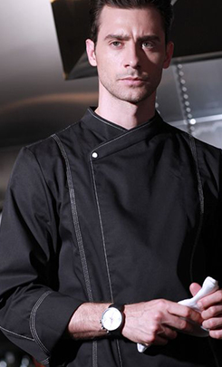

贾斯汀-比伯
DUZU 公司行动总裁
贾斯汀出生于1994年3月1日的加拿大安大略省伦敦的圣若瑟医院，并在安大略省的斯特拉特
福成长。小贾的母亲怀孕时年仅17岁，而他的父母结婚10个月后就离婚， 因此他从小由自己的母
亲、外公和外婆养大。
贾斯汀从小对曲棍球、足球和国际象棋感兴趣， 并一直追求自己的音乐梦想。 他从小自学了
钢琴、鼓、吉他和小号。从五岁起他就无师自通，自学了钢琴、打鼓、 吉他和小号， 华横溢的比
伯还非常热爱唱歌，他的歌声清脆而优美。早在2007年贾斯汀12岁时，在斯特拉特福德当地的歌
唱比赛中演唱尼欧的歌曲《So Sick》并获得了比赛的第二名。
查理-普斯
DUZU 公司行动经理
查理出生于1994年3月1日的加拿大安大略省伦敦的圣若瑟医院 ， 并在安大略省的斯特拉特
福成长。小查的母亲怀孕时年仅17岁，而他的父母结婚10个月后就离婚， 因此他从小由自己的母
亲、外公和外婆养大。
查理从小对曲棍球、 足球和国际象棋感兴趣， 并一直追求自己的音乐梦想。 他从小自学了
钢琴、鼓、吉他和小号。从五岁起他就无师自通，自学了钢琴、打鼓、 吉他和小号， 华横溢的比
伯还非常热爱唱歌， 他的歌声清脆而优美。 早在2007年查理12岁时， 在斯特拉特福德当地的歌
唱比赛中演唱尼欧的歌曲《So Sick》并获得了比赛的第二名。
艾薇儿-拉维尼
DUZU 公司策划
艾薇儿出生于1994年3月1日的加拿大安大略省伦敦的圣若瑟医院，并在安大略省的斯特拉特
福成长。小艾的母亲怀孕时年仅17岁，而他的父母结婚10个月后就离婚， 因此他从小由自己的母
亲、外公和外婆养大。
艾薇儿从小对曲棍球、足球和国际象棋感兴趣， 并一直追求自己的音乐梦想。 他从小自学了
钢琴、鼓、吉他和小号。从五岁起他就无师自通，自学了钢琴、打鼓、 吉他和小号， 华横溢的比
伯还非常热爱唱歌，他的歌声清脆而优美。早在2007年贾斯汀12岁时，在斯特拉特福德当地的歌
唱比赛中演唱尼欧的歌曲《So Sick》并获得了比赛的第二名。
泰勒-斯威夫特
DUZU 公司总监
艾薇儿出生于1994年3月1日的加拿大安大略省伦敦的圣若瑟医院，并在安大略省的斯特拉特
福成长。小艾的母亲怀孕时年仅17岁，而他的父母结婚10个月后就离婚， 因此他从小由自己的母
亲、外公和外婆养大。
艾薇儿从小对曲棍球、足球和国际象棋感兴趣， 并一直追求自己的音乐梦想。 他从小自学了
钢琴、鼓、吉他和小号。从五岁起他就无师自通，自学了钢琴、打鼓、 吉他和小号， 华横溢的比
伯还非常热爱唱歌，他的歌声清脆而优美。早在2007年贾斯汀12岁时，在斯特拉特福德当地的歌
唱比赛中演唱尼欧的歌曲《So Sick》并获得了比赛的第二名。
-

贾斯汀·比伯DUZU公司总裁
-
 贾斯汀·比伯DUZU公司总裁
贾斯汀·比伯DUZU公司总裁 -
贾斯汀·比伯DUZU公司总裁
-
贾斯汀·比伯DUZU公司总裁